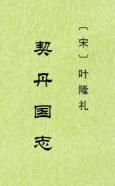

|
契丹国志，二十七卷，元刻本，旧题南宋叶隆礼奉敕撰。《四库全书总目提要》谓隆礼为淳祐七年(1247)进士，书在淳熙七年(1180)上进，其间相距六十七年，殊乖常情。近人余嘉锡《四库提要辨证》，称此书为元中叶人撰，假托隆礼之名。 书中记事，多摘取欧阳修《五代史记·四夷附录》、司马光《资治通鉴》、李焘《续资治通鉴长编》、洪皓《松漠纪闻》、武珪《燕北杂记》及宋人《使辽行程录》等书原文，分条排比。间有节录，颇多失当。书中纪述传闻，有《辽史》所不载者。元修《辽史》，天祚一朝《纪》、《传》多采自此书。【繁体版，简体版另见。】 （2023-4-28，独孤氏整理，初校） |
 |